SafeTherm
Temperatura - Veículo 1

Temperatura ao longo do Tempo
Comparação dos Sensores de Temperatura
BOM

Temperatura
Ideal: 4°C
Atenção: menor 3°C ou maior 7°C
Perigo: menor 2°C ou maior 8°C
Umidade - Veículo 1
Umidade ao longo do Tempo
Comparação dos Sensores de Umidade
ALERTA
Umidade
Ideal: 60%
Atenção: menor 45% ou menor 65%
Perigo: menor 30% ou menor 75%